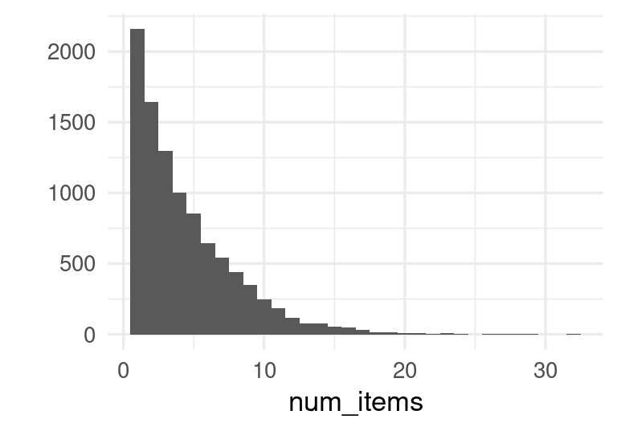
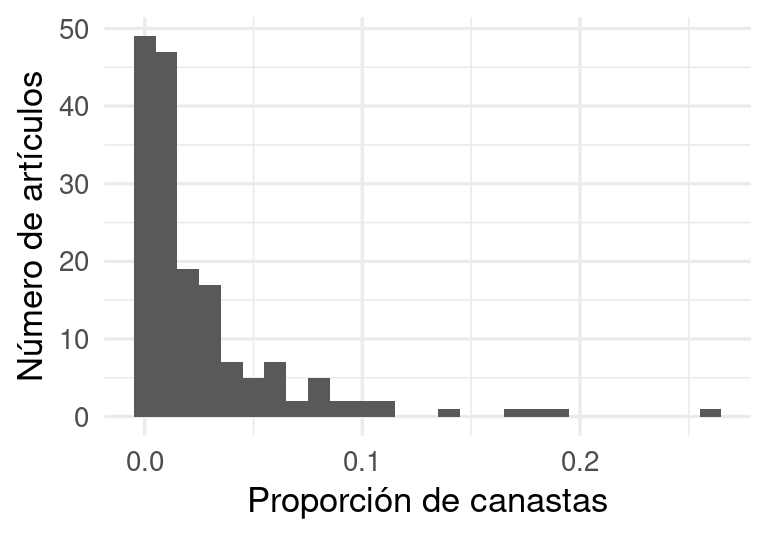
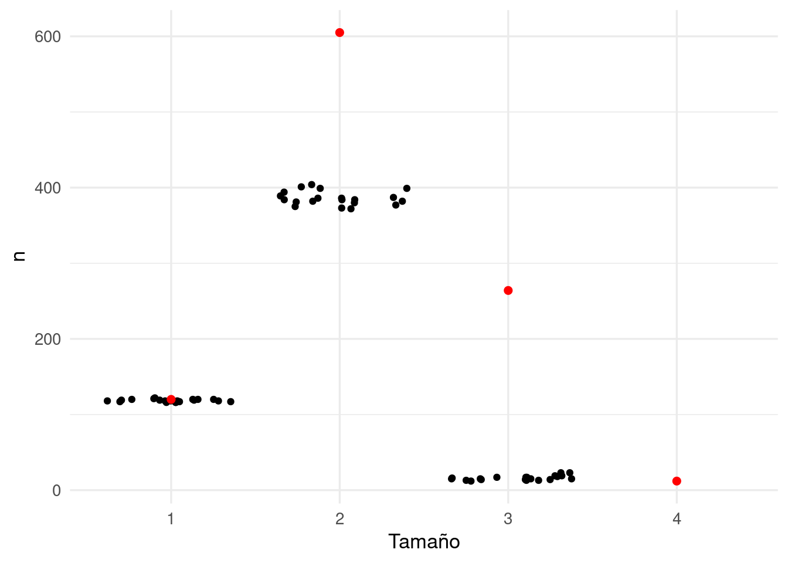
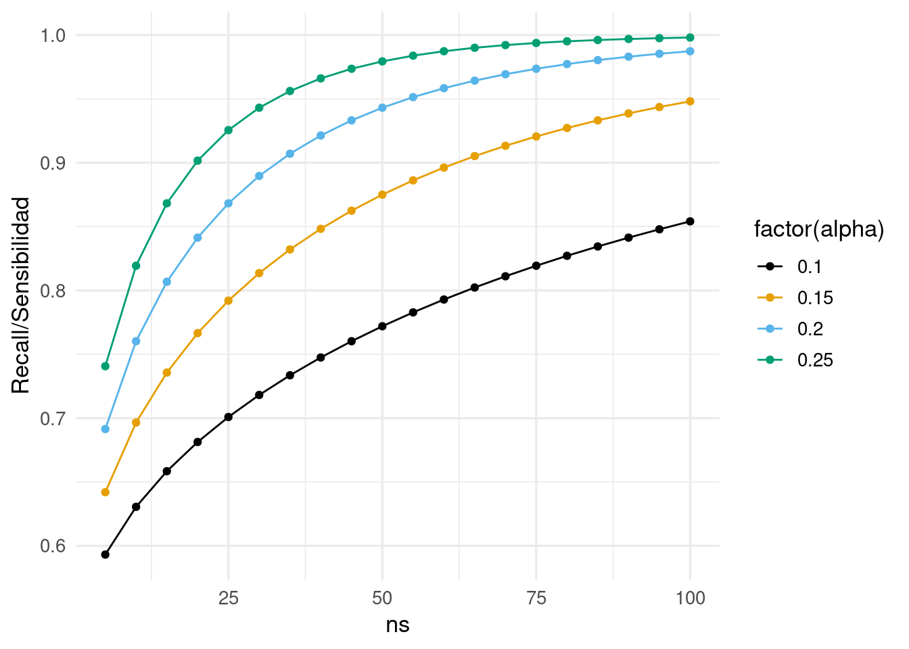
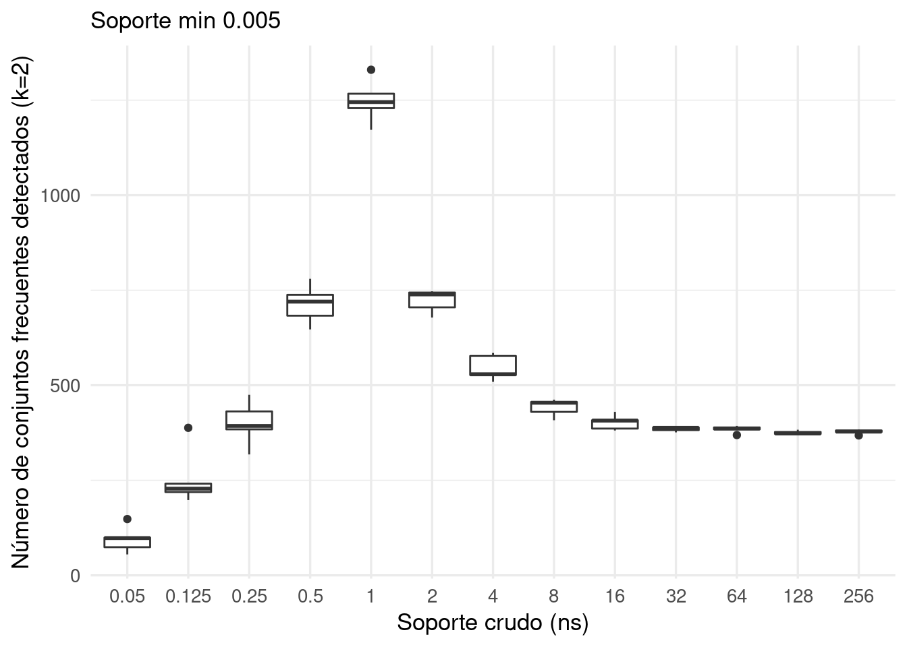
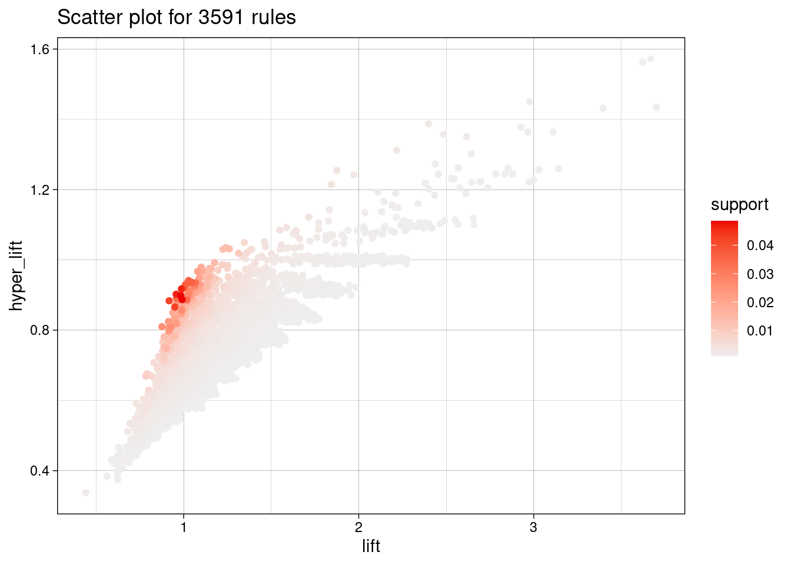
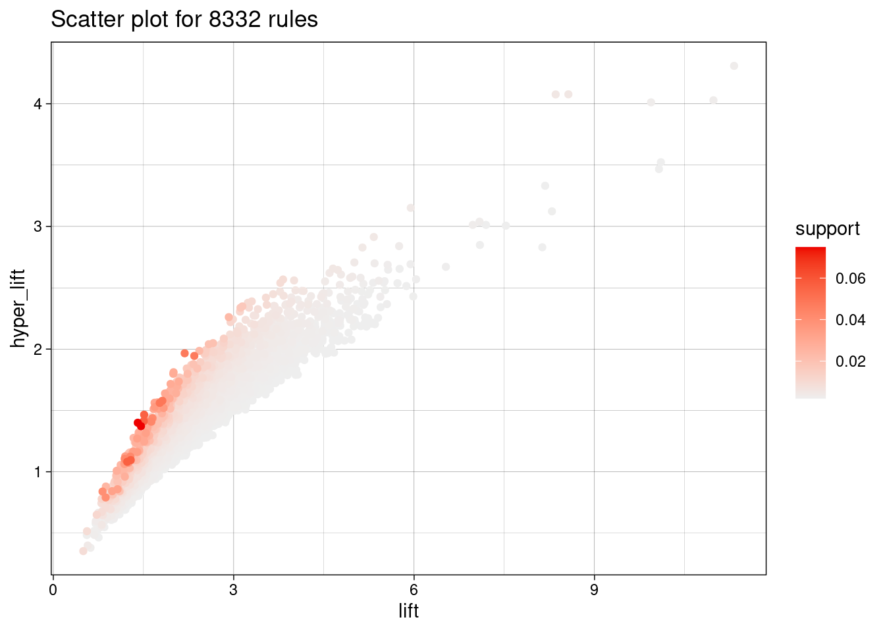
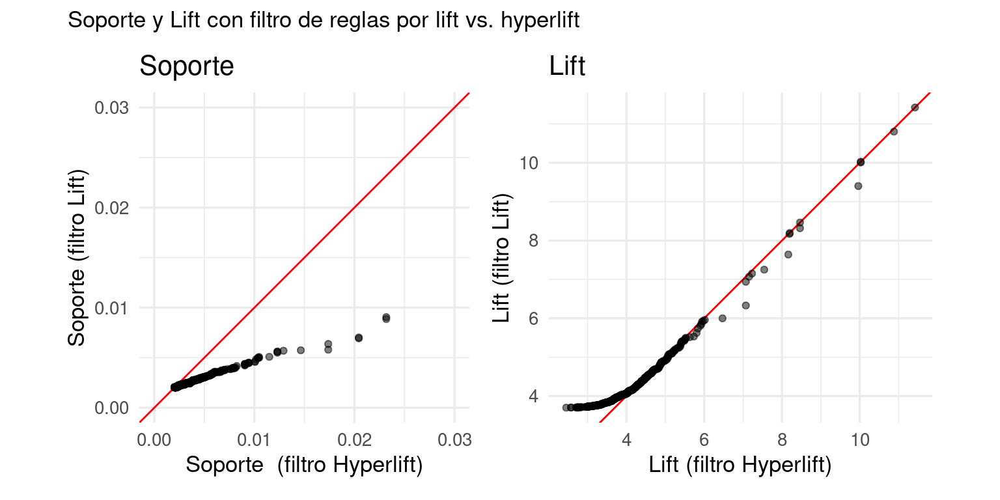
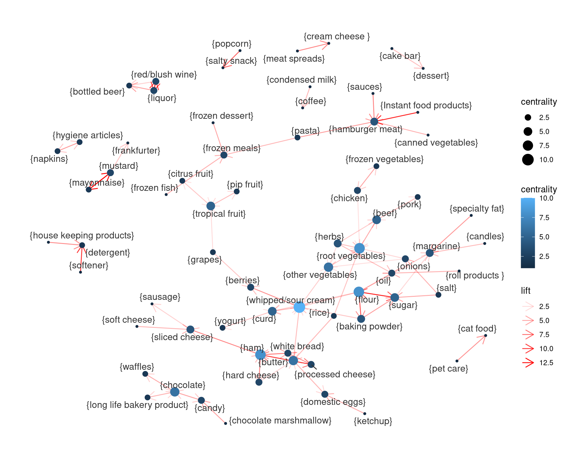
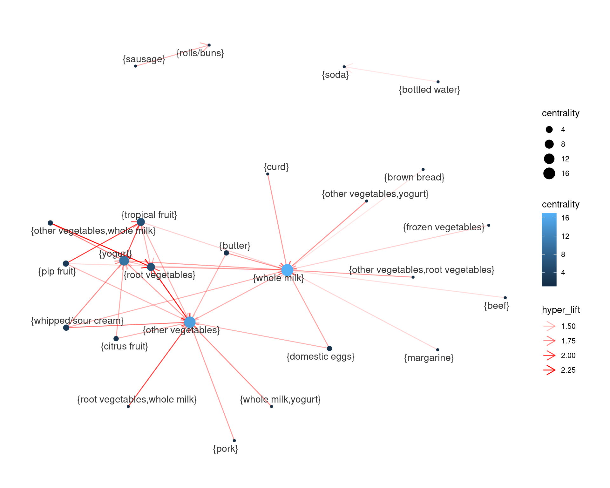

2 Análisis de conjuntos frecuentes
Una de las tareas más antiguas de la minería de datos es la búsqueda de conjuntos frecuentes en canastas, o un análisis derivado que se llama análisis de reglas de asociación.
Originalmente, pensamos que tenemos una colección grande de tickets de un supermercado. Nos interesa encontrar subconjuntos de artículos (por ejemplo, pan y leche) que ocurren frecuentemente en esos tickets. La idea es que si tenemos estos subconjuntos frecuentes, entonces podemos entender mejor el tipo de compras que hacen los clientes, diseñar mejor promociones y entender potenciales efectos cruzados, reordenar los estantes del supermercado, etc.
En general, los conjuntos frecuentes indican asociaciones (y cuantificaciones de la asociación) entre artículos que hay que tomar en cuenta al momento de tomar decisiones. Esto normalmente se llama análisis de market basket.
El análisis de subconjuntos frecuentes puede ser utilizado para otros propósitos, como veremos más adelante.
2.1 Datos de canastas
Consideremos el siguiente ejemplo chico del paquete arules. Contiene unas \(10\) mil canastas observadas en de un supermercado durante un mes, agregadas a \(169\) categorías. En muchos casos prácticos, el número de canastas o transacciones puede llegar hasta los miles o millones de millones de transacciones, y el número de artículos puede ser de miles o decenas de miles.
data(Groceries) # del paquete arules
Groceries## transactions in sparse format with
## 9835 transactions (rows) and
## 169 items (columns)lista_mb <- as(Groceries, "list")Estas son tres canastas (tickets) de ejemplo:
lista_mb[[2]]
## [1] "tropical fruit" "yogurt" "coffee"
lista_mb[[52]]
## [1] "canned beer"
lista_mb[[3943]]
## [1] "sausage" "UHT-milk" "flour" "flower (seeds)"Describiremos algunas características típicas de este tipo de datos. En primer lugar, podemos calcular la distribución del número de artículos por canasta, y vemos que es una cantidad relativamente baja en comparación al número total de artículos existentes:
sprintf("Número de canastas: %s", length(lista_mb))## [1] "Número de canastas: 9835"num_items <- sapply(lista_mb, length)
sprintf("Promedio de artículos por canasta: %.3f", mean(num_items))## [1] "Promedio de artículos por canasta: 4.409"qplot(num_items, binwidth = 1)
Podemos hacer una tabla con las canastas y examinar los artículos más frecuentes:
canastas_tbl <- tibble(
canasta_id = 1:length(lista_mb),
articulos = lista_mb)
canastas_tbl## # A tibble: 9,835 × 2
## canasta_id articulos
## <int> <list>
## 1 1 <chr [4]>
## 2 2 <chr [3]>
## 3 3 <chr [1]>
## 4 4 <chr [4]>
## 5 5 <chr [4]>
## 6 6 <chr [5]>
## 7 7 <chr [1]>
## 8 8 <chr [5]>
## 9 9 <chr [1]>
## 10 10 <chr [2]>
## # … with 9,825 more rowscanastas_tbl$articulos[[1]]## [1] "citrus fruit" "semi-finished bread" "margarine"
## [4] "ready soups"num_canastas <- nrow(canastas_tbl)
articulos_frec <- canastas_tbl |>
unnest(cols = articulos) |>
group_by(articulos) |>
summarise(n = n()) |>
mutate(prop = n / num_canastas) |>
arrange(desc(n))
articulos_frec |>
mutate(across(where(is_double), ~ round(.x, 3))) |>
DT::datatable()ggplot(articulos_frec, aes(x = prop)) +
geom_histogram(binwidth = 0.01) +
xlab("Proporción de canastas") + ylab("Número de artículos")
Y vemos que hay algunos pocos artículos que ocurren a tasas muy altas en las canastas. La mayoría tiene tasas de ocurrencia baja, y muchos ocurren en una fracción pequeña de las transacciones.
Un primer análisis que podríamos considerar es el de canastas completas que ocurren frecuentemente. ¿Qué tan útil crees que puede ser este análisis?
colapsar_canasta <- function(x, sep = "-"){
# convierte cada canasta a una cadena
x |> as.character() |> sort() |> paste(collapse = "-")
}
canastas_conteo <- canastas_tbl |>
mutate(canasta_str = map_chr(articulos, colapsar_canasta)) |>
group_by(canasta_str) |>
summarise(n = n(), .groups = "drop") |>
mutate(prop = round(n /num_canastas, 5)) |>
arrange(desc(n))
nrow(canastas_conteo)## [1] 7011Y aquí vemos las canastas más frecuentes:
DT::datatable(canastas_conteo |> head(n = 100) |>
mutate_if(is.numeric, ~ round(.x, 4)))Hay algunas canastas (principalmente canastas que contienen solo un artículo) que aparecen con frecuencia considerable (alrededor de \(1\%\) o \(2\%\)), pero las canastas están bastante dispersas en el espacio de posibles canastas (que es gigantesco: ¿puedes calcularlo?). Debido a esta dispersión este análisis es de utilidad limitada.
Datos de canastas
- El tamaño de las canastas normalmente es chico (por ejemplo de \(1\) a \(30\) artículos distintos).
- El número total de artículos típicamente no es muy grande (de cientos a cientos de miles, por ejemplo).
- El número de canastas puede ser mucho mayor (en algunos casos miles de millones) y quizá no pueden leerse completas en memoria.
- La mayoría de los artículos ocurre con frecuencias relativamente bajas, aunque unos cuantos tienen frecuencia alta.
- El número de canastas distintas es alto, y hay pocas canastas frecuentes.
El último inciso señala que encontrar canastas frecuentes no será muy informativo. En lugar de eso buscamos conjuntos de artículos (que podríamos llamar subcanastas) que forman parte de muchas canastas.
2.2 Conjuntos frecuentes
Un enfoque simple y escalable para analizar estas canastas es el de los conjuntos frecuentes (frequent itemsets).
Conjuntos frecuentes
Consideramos un conjunto de artículos \(I = \{s_1,s_2,\ldots, s_k\}\). El soporte de \(I\) lo definimos como la proporción de canastas que contienen (al menos) estos artículos: \[P(I) = \frac{n(I)}{n},\] donde \(n(I)\) es el número de canastas que contienen todos los artículos de \(I\), y \(n\) es el número total de canastas.
Sea \(s\in (0,1)\). Para este valor fijo \(s\), decimos que un conjunto de artículos \(I\) es un conjunto frecuente cuando \(P(I)\geq s\).
Ejercicio
Considera las canastas {1,2,3}, {1,2}, {2,4}, {2,3}. ¿Cuáles son los itemsets frecuentes de soporte > 0.4?
Ejemplo
Explicamos más adelante la función apriori de arules, pero por lo pronto podemos examinar algunos conjuntos frecuentes de soporte mínimo \(0.01\) (como hay alrededor de \(10000\) canastas, esto significa que canastas que aparecieron al menos \(100\) veces durante el mes):
pars <- list(supp = 0.01, target = "frequent itemsets")
ap <- apriori(lista_mb, parameter = pars)length(ap)## [1] 333Veamos algunos conjuntos frecuentes de tamaño \(1\):
ap_1 <- subset(ap, size(ap) == 1)
length(ap_1)
## [1] 88
sort(ap_1, by = "support") |> DATAFRAME() |> head(10)
## items support count
## 88 {whole milk} 0.25551601 2513
## 87 {other vegetables} 0.19349263 1903
## 86 {rolls/buns} 0.18393493 1809
## 84 {soda} 0.17437722 1715
## 85 {yogurt} 0.13950178 1372
## 81 {bottled water} 0.11052364 1087
## 83 {root vegetables} 0.10899847 1072
## 82 {tropical fruit} 0.10493137 1032
## 79 {shopping bags} 0.09852567 969
## 80 {sausage} 0.09395018 924Algunas de tamaño \(2\) y \(3\):
ap_2 <- subset(ap, size(ap) == 2)
length(ap_2)
## [1] 213
sort(ap_2, by = "support") |> head(10) |> DATAFRAME()
## items support count
## 301 {other vegetables,whole milk} 0.07483477 736
## 300 {rolls/buns,whole milk} 0.05663447 557
## 298 {whole milk,yogurt} 0.05602440 551
## 291 {root vegetables,whole milk} 0.04890696 481
## 290 {other vegetables,root vegetables} 0.04738180 466
## 297 {other vegetables,yogurt} 0.04341637 427
## 299 {other vegetables,rolls/buns} 0.04260295 419
## 286 {tropical fruit,whole milk} 0.04229792 416
## 295 {soda,whole milk} 0.04006101 394
## 293 {rolls/buns,soda} 0.03833249 377ap_3 <- subset(ap, size(ap) == 3)
length(ap_3)
## [1] 32
sort(ap_3, by="support") |> head() |> DATAFRAME()
## items support count
## 327 {other vegetables,root vegetables,whole milk} 0.02318251 228
## 332 {other vegetables,whole milk,yogurt} 0.02226741 219
## 333 {other vegetables,rolls/buns,whole milk} 0.01789527 176
## 322 {other vegetables,tropical fruit,whole milk} 0.01708185 168
## 331 {rolls/buns,whole milk,yogurt} 0.01555669 153
## 320 {tropical fruit,whole milk,yogurt} 0.01514997 149También podemos ver qué itemsets incluyen algún producto particular, por ejemplo
ap_berries <- subset(ap, items %pin% "berries")
length(ap_berries)
## [1] 4
sort(ap_berries, by ="support") |> head() |> DATAFRAME()
## items support count
## 48 {berries} 0.03324860 327
## 99 {berries,whole milk} 0.01179461 116
## 97 {berries,yogurt} 0.01057448 104
## 98 {berries,other vegetables} 0.01026945 101ap_soda <- subset(ap, items %pin% "soda")
length(ap_soda)
## [1] 28
sort(ap_soda, by ="support") |> head() |> DATAFRAME()
## items support count
## 84 {soda} 0.17437722 1715
## 295 {soda,whole milk} 0.04006101 394
## 293 {rolls/buns,soda} 0.03833249 377
## 294 {other vegetables,soda} 0.03274021 322
## 276 {bottled water,soda} 0.02897814 285
## 292 {soda,yogurt} 0.02735130 269Observaciones:
- Si hay \(m\) artículos, entonces el número de posibles itemsets es de \(2^m -1\). Este es un número típicamente muy grande. En nuestro ejemplo, existen unos \(7\times 10^{50}\) posibles itemsets. El número de itemsets de un tamaño fijo, por ejemplo \(k=5\), también puede ser muy grande ( \(169 \choose 5\) es del orden de mil millones).
- Si existe un gran número canastas, contar todas las posibles subcanastas que ocurren es poco factible si lo hacemos por fuerza bruta: requeríamos usar tablas en disco que son relativamente lentas, y quizá no podremos mantener en memoria todos los conteos.
- Sin embargo, en el ejemplo de arriba encontramos solamente 333 itemsets frecuentes: este número es relativamente chico comparado con el número de posibles itemsets. Esto nos da indicios que contando de una manera apropiada puede ser posible encontrar todos los itemsets frecuentes de cualquier orden.
Ejemplo
Si reducimos el soporte a \(0.0001\) (que implica prácticamente que queremos contar todos los itemsets que ocurren), obtenemos:
pars_2 <- list(supp = 0.0001, target="frequent itemsets", maxtime = 0, maxlen = 6)
ap_todos <- apriori(lista_mb, parameter = pars_2)## Apriori
##
## Parameter specification:
## confidence minval smax arem aval originalSupport maxtime support minlen
## NA 0.1 1 none FALSE TRUE 0 1e-04 1
## maxlen target ext
## 6 frequent itemsets TRUE
##
## Algorithmic control:
## filter tree heap memopt load sort verbose
## 0.1 TRUE TRUE FALSE TRUE 2 TRUE
##
## Absolute minimum support count: 0
##
## set item appearances ...[0 item(s)] done [0.00s].
## set transactions ...[169 item(s), 9835 transaction(s)] done [0.01s].
## sorting and recoding items ... [169 item(s)] done [0.00s].
## creating transaction tree ... done [0.00s].
## checking subsets of size 1 2 3 4 5 6## Warning in apriori(lista_mb, parameter = pars_2): Mining stopped (maxlen
## reached). Only patterns up to a length of 6 returned!## done [1.75s].
## sorting transactions ... done [0.00s].
## writing ... [10945131 set(s)] done [2.20s].
## creating S4 object ... done [2.80s].Entonces el número de itemsets que obtenemos (longitud menor o igual a \(5\)) es
length(ap_todos)## [1] 10945131que es órdenes de magnitud más grande que el conjunto de todas las transacciones.
En este ejemplo chico, el cálculo de esta colección (hasta canastas de tamaño 6) puede requierir menos de unos 2Gb de memoria (8Gb pueden no son ser suficientes para encontrar los de tamaño \(8\), \(9\) y \(10\)). Puedes ver entonces que para conjuntos de transacciones masivos, contar todos los itemsets generalmente será un proceso muy lento si no es que más bien infactible.
2.3 Monotonicidad de conjuntos frecuentes
Consideramos el problema de encontrar los conjuntos frecuentes.
Como discutimos arriba en las características de los datos de canastas, suponemos que
- La lista de transacciones es muy grande, y no puede leerse completa en memoria,
- Sin embargo, para una sola canasta, es posible calcular de manera relativamente rápida todos los subconjuntos de tamaño \(k\) (para \(k=1,2,3,4\), por ejemplo). Por ejemplo, si una canasta tiene \(10\) artículos, hay \(\binom{10}{3}\) subcanastas de tamaño 3, \(\binom{10}{3} = 210\). Calcular estos subconjuntos es relativamente rápido comparado con leer de disco una transacción.
- Finalmente, suponemos que el número de itemsets frecuentes es relativamente chico, debido a que el número de articulos que son más frecuentes es relativamente bajo (lo cual también depende de que escojamos un soporte suficientemente alto).
Bajo estas características, el principio básico que hace posible hacer los conteos de itemsets frecuentes es el siguiente:
Monotonicidad de itemsets Sea \(s\) un nivel de soporte mínimo fijo.
- Si un itemset \(I\) es frecuente, entonces todos sus subconjuntos son itemsets frecuentes.
- Equivalentemente, si algún subconjunto de un itemset no es frecuente, entonces el itemset no puede ser frecuente. Así que a priori, no es necesario examinar o contar itemsets que contienen al menos un subconjunto que no sea frecuente.
Este hecho, junto con la selección de un soporte mínimo para los itemsets frecuentes, es el que hace que la búsqueda y conteo de itemsets frecuentes sea un problema factible, pues podemos descartar una gran cantidad de artículos o itemsets a priori de manera simple, y no es necesario contar todo.
La demostración es como sigue: Sea \(n(I)\) el número de canastas que contiene \(I\), y supongamos que \(\tfrac{n(I)}{n}>s\) (\(I\) es un conjunto frecuente). Sea ahora \(J\subset I\). Entonces cualquier canasta que contiene los artículos de \(I\) contiene también los artículos de \(J\) (que son menos), de forma que \(n(J)\geq n(I)\). Como \(\tfrac{n(I)}{n}>s\), entonces \(J\) es un conjunto frecuente.
Ejemplo
En nuestro ejemplo anterior, el número total de itemsets de tamaño \(2\) es
length(subset(ap_todos, size(ap_todos) == 2))## [1] 9636Comparamos con los pares frecuentes cuando el soporte es \(1\%\):
length(subset(ap, size(ap) == 2))## [1] 213una diferencia de casi dos ordenes de magnitud.
2.4 Algoritmo a-priori
Para entender cómo aplicamos monotonicidad, consideremos cómo calcularíamos los pares frecuentes.
- Primero calculamos los artículos frecuentes (itemsets de tamaño \(1\)), que son los artículos que aparecen en al menos una proporción \(s\) de las canastas.
- (Contar candidatos) Esto requiere recorrer el archivo de transacciones y contar todos los artículos.
- (Podar) Examinamos los conteos y seleccionamos aquellos artículos que son frecuentes.
- Por el principio de monotonicidad, ningún par frecuente puede contener un artículo no frecuente. Así que para calcular pares:
- (Contar candidatos) Recorremos el archivo de transacciones. Para cada transacción, solo contamos pares candidatos cuyos dos artículos son artículos frecuentes (del paso anterior)
- (Podar) Examinamos los conteos y seleccionamos aquellos pares que son frecuentes.
Nótese que este algoritmo requiere dos pasadas sobre el conjunto de transacciones.
Ejercicio
Aplica este algoritmo para las canastas {1,2,3}, {1,8}, {2,4}, {2,3,6,7,8}, {2,3,8}, {1,7,8}, {1,2,3,5}, {2,3}. (soporte > 0.3)
Observaciones
- En este algoritmo, no es necesario leer todas las transacciones a la vez, podemos procesarlas por bloques, por ejemplo.
- Usamos una pasada de los datos para cada tamaño de itemset frecuente.
- En la primera pasada del algoritmo (artículos frecuentes), típicamente no es un problema mantener el conteo de todos los artículos en memoria (hay relativamente pocos artículos).
- Si en la segunda pasada no usáramos monotonicidad, tendríamos que mantener conteos de todos los posibles pares (que son del orden \(m^2\), donde \(m\) es el número de artículos). Mantener este conteo en memoria podría ser difícil si el número de artículos es grande. Sin embargo, el número de artículos frecuentes generalmente es considerablemente menor.
Para itemsets de tamaño más grande, el algoritmo original a priori (Agrawal and Srikant 1994) es:
Algoritmos a-priori
Sea \(L_1\) el conjunto de itemsets frecuentes de tamaño 1.
Para obtener \(L_k\), el conjunto de itemsets frecuentes de tamaño \(k\):
- Sea \(C_k\) el conjunto de candidatos de tamaño \(k\), construido a partir de \(L_{k-1}\) (monotonicidad).
- Para cada transacción \(t\),
- Calculamos \(S_t\), que son los candidatos en \(C_k\) que están en \(t\).
- Agregamos 1 a cada conteo de los candidatos en \(S_t\).
- Filtramos los elementos de \(C_k\) que tengan conteo mayor que el soporte definido para obtener \(L_k\)
- Seguimos hasta que encontramos que algún \(L_k\) es vacío (no hay itemsets frecuente), o para alguna \(k\) fija.
Observaciones: Este algoritmo se puede implementar de distintas maneras, por ejemplo:
- Hay distintas maneras de generar el conjunto \(C_{k}\) de candidatos. El paper original sugiere (suponiendo que los artículos siempre están ordenados en los itemsets) hacer un join de \(L_{k-1}\) consigo misma. Por ejemplo, para generar los tríos candidatos \(C_3\) a partir de \(L_2\) hacemos
SELECT A.item1, A.item2, B.item2
FROM L2 AS A, L2 AS B
WHERE A.item1 = B.item1, A.item2 < B.item2donde los itemsets estén ordenados en las canastas (por índice o lexicográficamente).
Hay también distintas maneras de calcular \(C_t\) para cada transacción. El paper original sugiere una estructura de árbol para encontrar los subconjuntos de \(t\) que están en \(C_k\), y no es neceasrio calcular \(C_k\). Ver también (Borgelt 2004).
Más detalles de la implementación de los algoritmos (incluyendo algunos más modernos como FPGrowth, que está implementado en spark) se puede encontrar en (Leskovec, Rajaraman, and Ullman 2014) y en (Borgelt 2004). FPGrowth construye una representación eficiente de árbol para los itemsets frecuentes y con esto evita el paso de construcción de candidatos (aunque tiene que mantener en memoria el árbol, que puede ser una estructura grande).
2.5 Modelos simples para análisis de canastas
Podemos entender mejor el comportamiento de este análisis con algunos modelos simples para datos de canastas.
En primer lugar, pensamos que los datos están en forma de codificación dummy (aunque no usemos esta representación para los datos reales, podemos considerarlo teóricamente). Una canasta es entonces un renglón de ceros y unos, dependendiendo qué artículos están o no en la canasta:
\[X= (X_1,X_2,\ldots, X_m)\] donde \(X_i = 1\) si el artículo \(i\) está en la canasta, y \(X_i=0\) si no está.
Podríamos pensar entonces en construir modelos para la conjunta de las canastas
\[P(X_1=x_1,X_2=x_2,\ldots, X_m=x_m)\]
Ejemplo
Por ejemplo, si los items son 1-camisa, 2-pantalones, 3-chamarra, podríamos tener las dos transacciones
- \(X = (1,0,0)\), para alguien que solo compró una camisa
- \(X = (1,0,1)\), para alguien que solo compró camisa y chamarra
Y podemos inventar una conjunta para todas las canastas, por ejemplo
## # A tibble: 8 × 4
## p c ch prob
## <dbl> <dbl> <dbl> <dbl>
## 1 0 0 0 0
## 2 0 0 1 0.105
## 3 0 1 0 0.186
## 4 0 1 1 0.186
## 5 1 0 0 0.186
## 6 1 0 1 0.186
## 7 1 1 0 0.105
## 8 1 1 1 0.047A partir de esta conjunta podemos calcular cualquier probabilidad que nos interese. Por ejemplo, la probabilidad de que alguien compre una camisa dado que compró un pantalón es:
prob_cp <- filter(probs, p == 1 & c == 1) |> pull(prob) |> sum()
prob_p <- filter(probs, p == 1) |> pull(prob) |> sum()
(prob_cp / prob_p) |> round(2)## [1] 0.29Como discutimos arriba, intentar estimar esta conjunta usando simples conteos de canastas no funciona, pues hay \(2^n\) posibles canastas, e incluso cuando \(n\) no es tan grande (por ejemplo \(200\)) es un número muy grande. Tenemos dos caminos (o una combinación de ellos): podemos hacer supuestos acerca de esta conjunta (y checar si son apropiados), o concentrarnos en estimar solamente algunas de sus características.
Más adelante veremos algunas técnicas basadas en modelos (por ejemplo embeddings de productos y canastas) que pueden ser útiles para el problema de encontrar asociaciones entre artículos. Por el momento, en market basket tomamos el segundo camino: estimar sólo algunas cantidades de la conjunta de ocurrencia de artículos.
La simplificación de market basket es concentrarnos en algunas marginales que involucren a pocos artículos de esta distribución, que tienen una forma como \[P(X_{i}=1,X_{j}=1),\] que es la probabilidad de que el conjunto \({i,j}\) aparezca en una canasta dada, o en los términos de market basket, el soporte del itemset \({i,j}\).
Modelo de artículos independientes
Por otro lado, si hacemos supuestos acerca de la conjunta es posible ajustar modelos a los datos de canastas. En primer lugar, podemos considerar el modelo simplista que establece que la aparición o no de cada artículo es independiente del resto:
\[P(X_1=x_1,\ldots, X_m=x_m) =\prod_m P(X_j=x_j)\]
Y adicionalmente, suponemos que la probabilidad de cada artículo es fija dada por \[P(X_j=1)=p_j\]. Este modelo no es realista, pero podemos usarlo para entender algunos aspectos de nuestros algoritmos de conjuntos frecuentes.
El soporte (bajo el modelo teórico) de un conjunto de \(k\) artículos es \[P(X_{s_1}=1,X_{s_2}=1,\ldots, X_{s_k}=1)=p_{s_1}p_{s_2}\cdots p_{s_k}\]
Podemos ver qué pasa si simulamos transacciones bajo este modelo simple. Primero definimos una función para simular canastas con probabilidades dadas para los artículos
simular_transacciones <- function(n_items, n_trans, prob){
etiquetas <- names(prob)
canastas <- map(seq(1, n_trans), function(i){
seleccion <- rbinom(n_items, 1, prob = prob)
etiquetas[seleccion == 1]
})
canastas
}Y ahora simulamos usando las proporciones que encontramos en el conjunto Groceries
set.seed(1299)
probs_items <- itemFrequency(Groceries) |> sort()
trans <- simular_transacciones(n_items = 169, n_trans = 10000, prob = probs_items)
ap_indep <- apriori(trans,
parameter = list(support = 0.005, target = "frequent itemsets"),
control = list(verbose = FALSE))Por ejemplo, aquí vemos algunos pares frecuentes encontrados por el algoritmo:
inspect(subset(ap_indep, support > 0.015 & size(ap_indep)==2))## items support count
## [1] {beef, whole milk} 0.0151 151
## [2] {margarine, whole milk} 0.0160 160
## [3] {butter, whole milk} 0.0159 159
## [4] {pork, whole milk} 0.0172 172
## [5] {domestic eggs, whole milk} 0.0165 165
## [6] {brown bread, whole milk} 0.0186 186
## [7] {other vegetables, whipped/sour cream} 0.0159 159
## [8] {whipped/sour cream, whole milk} 0.0177 177
## [9] {fruit/vegetable juice, whole milk} 0.0182 182
## [10] {pip fruit, whole milk} 0.0195 195
## [11] {canned beer, rolls/buns} 0.0158 158
## [12] {canned beer, other vegetables} 0.0160 160
## [13] {canned beer, whole milk} 0.0203 203
## [14] {newspapers, rolls/buns} 0.0150 150
## [15] {newspapers, other vegetables} 0.0171 171
## [16] {newspapers, whole milk} 0.0206 206
## [17] {bottled beer, rolls/buns} 0.0151 151
## [18] {bottled beer, other vegetables} 0.0158 158
## [19] {bottled beer, whole milk} 0.0209 209
## [20] {other vegetables, pastry} 0.0192 192
## [21] {pastry, whole milk} 0.0216 216
## [22] {citrus fruit, soda} 0.0151 151
## [23] {citrus fruit, rolls/buns} 0.0167 167
## [24] {citrus fruit, other vegetables} 0.0177 177
## [25] {citrus fruit, whole milk} 0.0240 240
## [26] {sausage, soda} 0.0179 179
## [27] {rolls/buns, sausage} 0.0170 170
## [28] {other vegetables, sausage} 0.0194 194
## [29] {sausage, whole milk} 0.0250 250
## [30] {shopping bags, soda} 0.0172 172
## [31] {rolls/buns, shopping bags} 0.0150 150
## [32] {other vegetables, shopping bags} 0.0182 182
## [33] {shopping bags, whole milk} 0.0258 258
## [34] {soda, tropical fruit} 0.0180 180
## [35] {rolls/buns, tropical fruit} 0.0193 193
## [36] {other vegetables, tropical fruit} 0.0209 209
## [37] {tropical fruit, whole milk} 0.0266 266
## [38] {root vegetables, soda} 0.0184 184
## [39] {rolls/buns, root vegetables} 0.0183 183
## [40] {other vegetables, root vegetables} 0.0191 191
## [41] {root vegetables, whole milk} 0.0294 294
## [42] {bottled water, yogurt} 0.0177 177
## [43] {bottled water, soda} 0.0202 202
## [44] {bottled water, rolls/buns} 0.0218 218
## [45] {bottled water, other vegetables} 0.0227 227
## [46] {bottled water, whole milk} 0.0287 287
## [47] {soda, yogurt} 0.0228 228
## [48] {rolls/buns, yogurt} 0.0245 245
## [49] {other vegetables, yogurt} 0.0258 258
## [50] {whole milk, yogurt} 0.0334 334
## [51] {rolls/buns, soda} 0.0345 345
## [52] {other vegetables, soda} 0.0344 344
## [53] {soda, whole milk} 0.0452 452
## [54] {other vegetables, rolls/buns} 0.0342 342
## [55] {rolls/buns, whole milk} 0.0462 462
## [56] {other vegetables, whole milk} 0.0507 507Estos pares frecuentes no se deben a asociaciones entre los artículos, sino a co-ocurrencia en las canastas. Artículos frecuentes apareceran en pares frecuentes, tríos frecuentes, etc. Comparamos por ejemplo el número de reglas encontradas para los datos reales, contra 20 simulaciones de este modelo:
# parámetros de apriori
pars <- list(supp = 0.005, target="frequent itemsets")
# producir 10 simulaciones
replicaciones <- map(1:20, function(i){
trans <- simular_transacciones(n_items = 169, n_trans = 10000, prob = probs_items)
ap_indep <- apriori(trans, parameter = pars, control = list(verbose = FALSE))
conteos <- table(size(ap_indep))
tibble(rep = i, long = names(conteos), n = as.numeric(conteos))
})
reps_tbl <- bind_rows(replicaciones)Ahora vamos a comparar con el análisis de las canastas reales:
# calcular observados
ap <- apriori(lista_mb, parameter = pars, control = list(verbose = FALSE))
conteos_obs <- table(size(ap))
obs_tbl <- tibble(long = names(conteos_obs), n = as.numeric(conteos_obs))
ggplot(reps_tbl, aes(x = long, y = n)) + geom_jitter(height = 0) +
geom_point(data = obs_tbl, colour = "red", size = 2) +
labs(x = "Tamaño")
Y vemos claramente que el modelo simple está lejos de ajustar los datos que observamos en las canastas de Groceries. Hay muchas más combinaciones frecuentes de tamaño \(2\) y \(3\) de lo que esperaríamos si los artículos se compraran independientemente, y esto indica asociaciones positivas entre artículos que nos gustaría descubrir. Veremos más adelante cómo identificar este tipo de conjuntos frecuentes.
Finalmente, comparamos los itemsets de ambos casos:
coinciden <- match(ap, ap_indep)
## Warning in match(x@items, table@items, nomatch = nomatch, incomparables =
## incomparables): Item coding not compatible, recoding item matrices first.
coinciden[500:505]
## [1] 323 324 325 NA NA NA
inspect(ap[500])
## items support count
## [1] {pork, rolls/buns} 0.01128622 111
inspect(ap_indep[323])
## items support count
## [1] {pork, rolls/buns} 0.011 110sum(!is.na(coinciden)) # contar los matches
## [1] 491
length(ap)
## [1] 1001
length(ap_indep)
## [1] 521Y vemos que en el análisis de datos reales estamos capturando la mayor parte de los itemsets frecuentes del modelo independiente. Estos itemsets se explican por la frecuencia simple de aparición de cada artículo.
2.6 Soporte teórico y conjuntos frecuentes
El tamaño de los datos de transacciones está relacionado con los mínimos soportes que tiene sentido analizar. Supongamos por ejemplo que tenemos un conjunto de \(n\) transacciones, y buscamos soporte mínimo de \(s\). Consideramos entonces que un conjunto \(I\) tiene soporte \(s_I\) teórico (el que observaríamos con una muestra muy grande), y nuestro interés es ver qué tan bien podemos identificar como frecuentes aquellos conjuntos que satisfagan \(s_I > s\).
Notamos primero que el valor esperado de ocurrencias \(n(I)\) de un conjunto \(I\) en los tiene una distribución binomial con número de pruebas \(n\) y probabilidad de observar un éxito de \(s_I\). Si suponemos que \(ns_I \leq 1\) y \(n\) no es muy chico, entonces la probabilidad de observar \(I\) 0 veces es aproximadamente
tab_1 <- tibble(ns = seq(0.1, 1, 0.2)) |>
mutate(prob_no_obs = ppois(0, ns))
tab_1## # A tibble: 5 × 2
## ns prob_no_obs
## <dbl> <dbl>
## 1 0.1 0.905
## 2 0.3 0.741
## 3 0.5 0.607
## 4 0.7 0.497
## 5 0.9 0.407De forma que con valores de \(n\) y \(s\) tales que \(ns <1\) , típicamente no observaremos una buena parte de todos los conjuntos frecuentes que buscamos encontrar.
Supongamos entonces que \(ns\geq 5\), y queremos aproximar la probabilidad de encontrar una canasta \(I\) tal que \(s_I = (1+\alpha) s\) (es decir, canastas con soporte de al menos \(\alpha\)% más que el soporte mínimo elegido). Entonces usando la aproximación normal a la binomial, la probabilidad de capturar a \(I\) correctamente como frecuente es aproximadamente
\[P \left (Z > \frac{\sqrt{n}(s - s_I)}{\sqrt{s_I(1-s_I)}} \right ) = P \left (Z > \frac{\sqrt{n}(s - (1+\alpha)s)}{\sqrt{s_I(1-s_I)}} \right )\approx P \left (Z > -\frac{\alpha}{\sqrt{1+\alpha}}\sqrt{ns}\right )\]
crossing(ns = seq(5, 100, 5), alpha = c(0.10, 0.15, 0.20, 0.25)) |>
mutate(prob_capturar = map2_dbl(ns, alpha,
\(ns, alpha) pnorm(sqrt(ns) * alpha/sqrt(1-alpha)))) |>
ggplot(aes(x = ns, y = prob_capturar, colour = factor(alpha))) +
geom_line() + geom_point() + ylab("Recall/Sensibilidad")
Como ejercicio, puedes calcular la probabilidad de capturar incorrectamente como frecuente un conjunto \(I\) con \(s_I = s/(1+\alpha)\) (la tasa de falsos positivos). En general, vemos que tomar \(ns\) menor que 10 no necesariamente es buena idea
Así que si queremos capturar con probabilidad al menos 90% las canastas cuyo soporte es 20% mayor al soporte mínimo, necesitamos tomar \(s\) tal que \(ns>30\), por ejemplo.
- Usualmente queremos hacer el soporte mínimo \(s\) un poco más chico, para que capturemos con alta probabilidad aquellos conjuntos de soporte teórico \(s\) (aunque esto implica también que capturaremos más conjuntos de menor soporte que el teórico).
- La elección de punto de corte es más o menos arbitraria (lo cual es una dificultad del análisis de conjuntos frecuentes), pero es importante recordar que si hacemos \(s\) mucho más chico que estas recomendaciones, capturaremos por azar muchos conjuntos cuya frecuencia teórica es mucho más baja de lo que esperábamos.
- Finalmente, recordamos que cuanto más chico tomemos el soporte, más conjuntos frecuentes encontraremos, y el procesamiento puede tomar mucho tiempo.
Ejemplo
Podemos experimentar con el modelo de independencia:
simular_num_reglas <- function(n_trans, prob, pars){
n_items <- length(prob)
etiquetas <- 1:n_items
if(!is.null(names(prob))) {
etiquetas <- names(prob)
}
trans <- map(1:n_trans, function(i){
etiquetas[which(rbinom(n_items, 1, prob = prob) == 1)]
})
ap_indep <- apriori(trans, parameter = pars, control = list(verbose = FALSE))
conteos <- table(size(ap_indep))
tibble(long = names(conteos), n = as.numeric(conteos))
}
# fijamos para el ejemplo
probs_items <- sort(itemFrequency(Groceries))
pars_1 <- list(support = 0.005, target = "frequent itemsets")
simular_1 <- function(n_trans){
sim_tbl <- simular_num_reglas(n_trans = n_trans, prob = probs_items, pars = pars_1)
sim_tbl
}set.seed(125)
n_trans <- c(10, 25, 50, 100, 200, 400, 800, 1600, 3200, 6400, 12800, 25600, 51200)
reps <- tibble(n_trans = rep(n_trans, each = 5)) |>
mutate(conteos = map(n_trans, simular_1)) |>
mutate(ns = n_trans * 0.005)
reps_long_2 <- reps |> unnest(cols = conteos) |>
filter(long == 2)ggplot(reps_long_2, aes(x=factor(ns), y = n)) + geom_boxplot() +
ylab("Número de conjuntos frecuentes detectados (k=2)") +
xlab("Soporte crudo (ns)") + labs(subtitle = "Soporte min 0.005") 
Observaciones
Para conjuntos de transacciones chicos no podemos capturar muchos conjuntos frecuentes teóricos porque no observamos suficientes transacciones.
Para niveles medios de número de transacciones, podemos obtener resultados ruidosos: muchos subconjuntos que identificamos como frecuentes no lo son realmente (es variación muestral).
Cuanto tenemos un número suficientemente alto de transacciones, el número de subconjuntos frecuentes encontrados se estabiliza en el valor teórico verdadero del número de conjuntos frecuentes que existen.
2.7 Reglas de asociación
Aunque algunas veces lo único que nos interesa es la co-ocurrencia de artículos (por ejemplo, para entender qué artículos se podrían ver potencialmente afectados por acciones en otros artículos que están en el mismo itemset frecuente), otras veces nos interesa entender qué artículos están asociados a lo largo de canastas por otros factores, como tipo de cliente, tipo de ocasión o propósito (por ejemplo, hora del día, hacer un pastel, promociones, decisiones de organización de estantes), etc.
Con este propósito podemos organizar la información de los itemsets frecuentes en términos de reglas de asociación. Un ejemplo de una regla de asociación es:
Entre las personas que compran leche y pan, un \(40\%\) compra también yogurt
Observaciones:
Por monotonicidad, si \(J\) es un conjunto de artículos más grande que \(I\) (es decir \(I\subset J\)), entonces \(n(J) \leq n(I)\): cualquier canasta que contiene a \(J\) también contiene a \(I\), y puede haber algunas canastas que contienen a \(I\) no contienen a \(J\).
Bajo el modelo de items independientes, todas las confianzas satisfacen \(P(I\to j)=P(j)\) (la confianza simplemente es la probabilidad de observar el artículo \(j\), independientemente del antecedente).
Confianza alta no necesariamente significa una asociación de los items: si el consecuente \(j\) tiene soporte alto, entonces podemos obtener confianza alta aunque no haya asociación.
Ejemplo
En nuestro ejemplo anterior, el soporte de {whole milk,yogurt} es de \(0.0560\), el soporte de {whole milk} es \(0.2555\), así que la confianza de la regla \(whole milk \to yogurt\) es \(\frac{0.0560}{0.2555}=\) 0.22
Podemos usar la confianza para filtrar reglas que tienen alta probabilidad de cumplirse:
Ejemplo
pars <- list(supp = 0.01, confidence = 0.20, target="rules",
ext = TRUE, minlen = 2)
reglas <- apriori(lista_mb, parameter = pars)Podemos examinar algunas de las reglas:
inspect(reglas[1:10,])## lhs rhs support confidence coverage
## [1] {hard cheese} => {whole milk} 0.01006609 0.4107884 0.02450432
## [2] {butter milk} => {other vegetables} 0.01037112 0.3709091 0.02796136
## [3] {butter milk} => {whole milk} 0.01159126 0.4145455 0.02796136
## [4] {ham} => {whole milk} 0.01148958 0.4414062 0.02602949
## [5] {sliced cheese} => {whole milk} 0.01077783 0.4398340 0.02450432
## [6] {oil} => {whole milk} 0.01128622 0.4021739 0.02806304
## [7] {onions} => {other vegetables} 0.01423488 0.4590164 0.03101169
## [8] {onions} => {whole milk} 0.01209964 0.3901639 0.03101169
## [9] {berries} => {yogurt} 0.01057448 0.3180428 0.03324860
## [10] {berries} => {other vegetables} 0.01026945 0.3088685 0.03324860
## lift count
## [1] 1.607682 99
## [2] 1.916916 102
## [3] 1.622385 114
## [4] 1.727509 113
## [5] 1.721356 106
## [6] 1.573968 111
## [7] 2.372268 140
## [8] 1.526965 119
## [9] 2.279848 104
## [10] 1.596280 101En la siguiente tabla, coverage es el soporte del antecedente (lhs = left hand side). Agregamos también el error estándar de la estimación de confidence (que es una proporción basada en el número de veces que se observa el antecedente):
df_1 <- sort(reglas, by = "confidence") |> DATAFRAME()
df_2 <- df_1 |> select(LHS, RHS, coverage, confidence, support) |>
head(100) |>
mutate(lhs.base = num_canastas * coverage) |>
mutate(conf.ee = sqrt(confidence * (1 - confidence) / lhs.base)) |>
mutate_if(is.numeric, ~ round(.x, 2))
DT::datatable(df_2 |> select(-lhs.base))Observaciones:
Nota que estas tres cantidades están ligadas en cada canasta por \(coverage\times confidence = support\). Usa un argumento de probabilidad condicional para mostrarlo.
Muchas de las reglas con confianza alta tienen como consecuente un artículo de soporte alto (por ejemplo, whole milk), como explicamos arriba. Nótese también que las reglas con confianza más alta tienden a tener soporte bajo. Esto lo discutiremos más adelante.
Ejercicio
- Para un mismo consecuente (por ejemplo whole milk), examina cómo varían los valores de confidence. ¿A qué crees que se deba esto?
Es natural que artículos frecuentes ocurran en muchas canastas juntas, es decir, que reglas formadas con ellas tengan confianza relativamente alta. Por ejemplo, la regla pan -> verduras podría tener confianza y soporte alto, pero esto no indica ninguna asociación especial entre estos artículos. La razón puede ser que verduras es un artículo muy común.
Podemos refinar las reglas de asociación considerando qué tan diferente es \(P(j|I)\) de \(P(j)\). La primera cantidad es la probabilidad de observar el item \(j\) bajo la información de que la canasta contiene a \(I\). Si esta cantidad no es muy diferente a \(P(j)\), entonces consideramos que esta regla no tiene mucho interés.
En nuestro ejemplo, veamos dos reglas con interés muy distinto:
df_1 <- arrange(df_1, desc(lift))
df_1[c(4, nrow(df_1)),] |> select(LHS, RHS, coverage, confidence, lift)## LHS RHS coverage confidence lift
## 4 {beef} {root vegetables} 0.05246568 0.3313953 3.0403668
## 231 {soda} {whole milk} 0.17437722 0.2297376 0.8991124La primera regla tiene un interés mucho más alto que la segunda, lo que indica una asociación más importante entre los dos artículos.
Observaciones
Cuando decimos que un grupo de artículos están asociados, generalmente estamos indicando que forma alguna regla de asociación con lift alto.
En principio también podría haber reglas con lift muy por debajo de uno, y eso también indica una asociación (por ejemplo coca y pepsi). Pero el método de itemsets frecuentes no es muy apropiado para buscar estas reglas, pues precisamente esas reglas tienden a tener soporte y confianza bajas.
El valor del lift también puede escribirse (deméstralo) como \[ \frac{\hat{P}(I\cup\{j\})}{\hat{P}(I)\hat{P}({j})},\] Cuando los artículos son independientes, esta cantidad está cercana a \(1\). Es una medida de qué tan lejos de independencia están la ocurrencia de los itemsets \(I\) y \(j\).
Ejemplo
df_1 <- sort(reglas, by = "lift") |> DATAFRAME()En esta tabla, coverage es el soporte del antecedente (lhs = left hand side):
df_2 <- df_1 |> select(LHS, RHS, coverage, lift, confidence, support) |>
head(100) |>
mutate_if(is.numeric, ~ round(.x, 2))
DT::datatable(df_2)Las reglas de asociación se calculan comenzando por calcular los itemsets frecuentes según el algoritmo a priori explicado arriba. Para encontrar las reglas de asociación hacemos:
- Para cada itemset frecuente \(f\), tomamos como candidatos a consecuentes los artículos \(i\) de \(f\)
- Si la confianza \(\frac{\hat{P}(I)}{\hat{P}(I-\{j\})}\) es mayor que la confianza mínima, agregamos la regla de asociación \(I\to j\).
Con este proceso encontramos todas las reglas \(I\to j\) tales que \(I\cup\{j\}\) es un itemset frecuente.
2.8 Dificultades en el análisis de canastas
El análisis de canastas es un método rápido y simple que nos da varias maneras de explorar las relaciones entre los artículos. Sin embargo, hay varias dificultades en su aplicación.
Número de reglas y itemsets
Muchas veces encontramos un número muy grande de itemsets o reglas. Hay varias maneras de filtrar estas reglas según el propósito. Si filtramos mucho, perdemos reglas que pueden ser interesantes. Si filtramos poco, es difícil entender globalmente los resultados del análisis.
Un punto de vista es producir una cantidad de reglas para procesar posteriormente con queries: por ejemplo, si nos interesa entender las relaciones de berries con otros artículos, podemos filtrar las reglas encontradas y examinarlas más fácilmente.
Cortes estrictos en el filtrado
Cuando seleccionamos valores mínimos de soporte, confianza y/o lift, estas decisiones son más o menos arbitrarias. Distintos analistas pueden llegar a resultados distintos, incluso cuando el propósito del análisis sea similar, y en ocasiones hay que iterar el análisis para encontrar valores adecuados que den conjuntos razonables con resultados interesantes. Este último concepto es subjetivo.
Redundancia de reglas
Existe alguna redundancia en las reglas que encontramos. Por ejemplo, podríamos tener {yogurt, berries} -> {whipped cream}, pero también {yogurt} -> {whipped cream}. Este traslape de reglas hace también difícil entender conjuntos grandes de reglas.
Variabilidad de medidas de calidad
Un problema del análisis clásico de soporte-confianza-lift es la variabilidad de las estimaciones de confianza y lift.
- Cuando comenzamos poniendo valores de soporte y confianza relativamente bajos, encontramos muchas reglas. Muchas de estas reglas son ruidosas (en un número más grande de transacciones las descalificaríamos).
- Intentamos muchas veces filtrar u ordenar por lift, para considerar las reglas más interesantes
- Sin embargo, encontramos entonces que muchas reglas de lift y/o confianza altas son aquellas que tienen soporte bajo y consecuentes poco frecuentes. Como veremos más adelante, esto se debe muchas veces a error de estimación. Los valores más grandes de lift generalmente son sobreestimaciones, por la naturaleza del análisis basado en cortes.
- Si regresamos a incrementar soporte y confianza, potencialmente perdemos reglas interesantes.
Veamos cómo se comportan confianza y lift para el modelo donde no hay asociaciones. Utilizamos el modelo de independencia que explicamos arriba.
Obsérvese que en este modelo todas las confianzas teóricas son iguales a la frecuencia del consecuente, y todos los valores teóricos de lift son \(1\):
pars <- list(support=0.002, confidence = 0.0, target="rules",
ext = TRUE, minlen = 2)
sims_reglas <- map(1:10, function(i){
trans <- simular_transacciones(n_items = 169, n_trans = 10000, prob = probs_items)
ap_random <- apriori(trans,
parameter = pars,
control = list(verbose = FALSE))
ap_random
})Y notamos que conforme el soporte de la regla es más bajo, hay más variabilidad en las estimaciones del confianza y lift. En este caso utilizamos
plot(subset(sims_reglas[[4]], rhs %pin% "whole milk"),
measure=c("support","confidence"), shading = "lift", engine = "plotly")## To reduce overplotting, jitter is added! Use jitter = 0 to prevent jitter.plot(subset(sims_reglas[[4]], rhs %pin% "whole milk"),
measure=c("support","lift"), shading = "confidence", engine = "plotly")## To reduce overplotting, jitter is added! Use jitter = 0 to prevent jitter.El valor de confianza y de lift puede ser altamente variable para reglas con soporte bajo. Podemos tomar dos caminos:
- Cuando hagamos el soporte más bajo, incrementamos el valor de lift mínimo. Esto evita que obtengamos demasiadas reglas que no representan interacciones reales entre los artículos.
- Podemos usar otras medidas que tomen en cuenta la variabilidad de las estimaciones. Por ejemplo, hyper-lift y hyper-confidence están basados en modelos simples (como el que vimos arriba), que filtran aquellos valores de calidad que están en las colas de las distribuciones de los modelos simples.
2.9 Otras medidas de calidad de reglas
Hay una gran cantidad de medidas de interés de reglas que se han propuesto desde que se usa el análisis de canasta. Aquí discutimos hyper-lift y hyper-confidence, que toman en cuenta el soporte de las reglas para proponer puntos de corte (Hahsler and Hornik 2008).
Explicamos aquí el hyper-lift para una regla \(i\to j\).
Consideramos el modelo de independencia (lo pensamos como el modelo nulo), fijando las probabilidades de ocurrencia de los artículos según los datos (como hicimos en los ejemplos de arriba) y el número de transacciones. Bajo este modelo, el número de ocurrencias \(X_{\{i,j\}}\) de el itemset \(\{i,j\}\) es una variable aleatoria con distribución conocida (binomial). Esta distribución representa la variación que podemos observar en los conteos de \(\{i,j\}\) bajo distintas muestras de transacciones del mismo tamaño.
La idea básica del hyperlift es comparar el conteo \(n(\{i,j\})\) con la cola superior de la distribución de \(X_{i,j}\) bajo el supuesto de independencia, poniendo
\[HL(I\to j) = \frac{n(\{I,j\})}{Q_\delta (X_{I,j})},\]
donde \(Q_\delta\) es tal que \(P(X_{I,j} < Q_\delta (X_{I,j}))\approx \delta\). Tomamos por ejemplo \(\delta=0.99\). De esta forma, \(HL>1\) sólo cuando el conteo observado \(n(\{i,j\})\) está en la cola superior del conteo bajo la hipótesis nula de independencia. Esto toma en cuenta la variabilidad de los conteos (que es grande en términos relativos cuando el soporte es bajo).
Observaciones:
- El modelo de independencia que se usa en el paquete arules es una variación del que vimos aquí, ver los detalles en (Hahsler and Hornik 2008).
- Los valores de hyper-lift no son realmente comparables a los de lift, son dos medidas de calidad de asociación diferentes, pero similares en cuanto a lo que quieren capturar.
Hyper-lift bajo hipótesis de independencia
Veamos cómo se comporta el hyper-lift simulando datos con el modelo de independencia:
trans <- simular_transacciones(n_items = 169, n_trans = 10000, prob = probs_items)
ap_random <- apriori(trans, parameter =
list(support=0.001, confidence = 0.10,
target="rules", ext = TRUE, minlen = 2),
control = list(verbose = FALSE))
agregar_hyperlift <- function(reglas, trans){
quality(reglas) <- cbind(quality(reglas),
hyper_lift = interestMeasure(reglas, measure = "hyperLift",
transactions = trans))
reglas
}
ap_random <- agregar_hyperlift(ap_random, trans)Vemos claramente que la gran mayoría de reglas obtenidas ahora tienen hyper-lift menor que uno
plot(ap_random, measure=c("lift","hyper_lift"), shading = "support")## To reduce overplotting, jitter is added! Use jitter = 0 to prevent jitter.
Cortando en un valor relativamente bajo de hyper-lift, vemos que nos deshacemos correctamente de casi todas las reglas:
length(ap_random)
## [1] 3591
length(subset(ap_random, lift > 1))
## [1] 2643
length(subset(ap_random, hyper_lift > 1))
## [1] 130Hyper-lift para datos de canastas
Ahora aplicamos a los datos reales
pars <- list(supp = 0.002, confidence = 0.10, target="rules",
ext = TRUE, minlen = 2)
reglas <- apriori(lista_mb, parameter = pars,
control = list(verbose=FALSE))
reglas <- agregar_hyperlift(reglas, Groceries)
length(reglas)
## [1] 8332Vemos que podemos cortar niveles de hyper-lift donde obtenemos reglas de soporte relativamente alto.
plot(reglas, measure=c("lift","hyper_lift"), shading = "support")## To reduce overplotting, jitter is added! Use jitter = 0 to prevent jitter.
Si cortamos en valores que dan un número similar de reglas, por ejemplo:
filtradas_hl <- subset(reglas, hyper_lift > 2)
filtradas_lift <- subset(reglas, lift > 3.7)
length(filtradas_hl)## [1] 439length(filtradas_lift)## [1] 480Vemos que las reglas cortadas con hyper-lift tienen mejores valores de soporte:
library(patchwork)
soportes <- qqplot(
quality(filtradas_hl)$support,
quality(filtradas_lift)$support, plot.it = FALSE) |>
as_tibble()
g_soporte <- ggplot(soportes, aes(x, y)) +
geom_abline(colour = "red") +
geom_point(alpha = 0.5) +
xlab("Soporte (filtro Hyperlift)") +
ylab("Soporte (filtro Lift)") +
coord_fixed(xlim = c(0, 0.03), ylim = c(0, 0.03)) +
ggtitle("Soporte")
soportes <- qqplot(
quality(filtradas_hl)$lift,
quality(filtradas_lift)$lift, plot.it = FALSE) |>
as_tibble()
g_lift <- ggplot(soportes, aes(x, y)) +
geom_abline(colour = "red") +
geom_point(alpha = 0.5) +
xlab("Lift (filtro Hyperlift)") +
ylab("Lift (filtro Lift)") + coord_fixed() +
ggtitle("Lift")g_soporte + g_lift +
plot_annotation(
subtitle = "Soporte y Lift con filtro de reglas por lift vs. hyperlift")
La distribución de valores de lift no es tan diferente, de forma que esta medida de calidad no se degrada en el conjunto de reglas que encontramos:
En resumen, al utilizar hyper-lift para filtrar reglas en lugar de lift obtenemos reglas de mejor calidad:
- Descartamos más reglas de soporte bajo que tienen lift alto por azar.
- Los valores de soporte de las reglas tienden a ser más altos.
- Los valores de lift son comparables
2.10 Selección de reglas
Ahora discutiremos cómo seleccionar itemsets frecuentes y reglas.
Filtrar con todos estos criterios (soporte, confianza, soporte del antecedente, lift) no es simple, y depende de los objetivos del análisis. Recordemos también que estos análisis están basados justamente en cortes “duros” de los datos, más o menos arbitrarios, y por lo tanto pueden los resultados son variables.
Hay varias maneras de conducir el análisis. Dos tipos útiles son:
Itemsets de alta frecuencia: en este enfoque buscamos reglas con soporte y confianza relativamente altos. Generalmente están asociados a productos muy frecuentes, y nos indica potencial de interacción entre los artículos. Este análisis es más una reexpresión de la información contenida en los itemsets frecuentes. En este caso, podemos filtrar con soporte alto, para evitar estimaciones ruidosas (por ejemplo, soporte mínimo de 300 canastas).
Interacciones altas: en este enfoque donde buscamos entender nichos. Consideramos valores de soporte y confianza más bajos, pero con valores de lift/hyper-lift alto. Este análisis es más útil para entender, por ejemplo, propósitos de compras, convivencia de artículos, tipos de comprador, etc.
Colección de reglas para hacer querys: la colección de reglas puede ser más grande, e incluir por ejemplo resultados de distintas corridas de market basket (incluyendo los dos enfoques de arriba). Las reglas se examinan seleccionando antecedentes o consecuentes, valores altos de soporte, etc, según la pregunta particular que se quiera explorar.
Ejemplo: canastas grandes
Para entender las canastas grandes, podemos variar valores de soporte y confianza para encontrar un número manejable de reglas.
pars <- list(support = 0.02,
confidence = 0.20,
minlen = 2,
target="rules", ext = TRUE)
reglas_1 <- apriori(lista_mb, parameter = pars)Esta elección de parámetros resulta en 72. Podemos ordenar por hyper-lift:
plot(reglas_1, colors=c("red", "gray"), engine = "plotly")reglas_1 <- agregar_hyperlift(reglas_1, lista_mb)
DT::datatable(DATAFRAME(sort(reglas_1, by = "hyper_lift")) |>
select(-count, -coverage) |>
mutate_if(is.numeric, ~ round(.x, 2)))Observaciones: conforme bajamos en esta tabla (ordenada por soporte), las estimaciones de confianza y lift son menos precisas.
2.11 Búsqueda de reglas especializadas
Otra manera de usar este análisis es intenando buscar asociaciones más fuertes (lift o hyper-lift más alto), aún cuando sacrificamos soporte. Por su naturaleza, este tipo de análisis puede resultar en reglas más ruidosas (malas estimaciones de confianza y lift), pero es posible filtrar valores más altos de estas cantidades para encontrar reglas útiles.
Comenzamos con un soporte y confianza más bajas
pars <- list(support = 0.001,
confidence = 0.1,
minlen = 2,
target="rules", ext = TRUE)
b_reglas <- apriori(lista_mb, parameter = pars)
b_reglas <- agregar_hyperlift(b_reglas, lista_mb)Y ahora filtramos con valores más grandes de hyper-lift. Podemos filtrar adicionalmente con coverage para obtener reglas que aplican con más frecuencia:
b_reglas## set of 32783 rulesb_reglas_lift <- subset(b_reglas,
hyper_lift > 2.5 & size(b_reglas) < 4 &
coverage > 0.01)
b_reglas_lift <- sort(b_reglas_lift, by = "hyper_lift")
DT::datatable(DATAFRAME(b_reglas_lift) |>
select(-count, -coverage) |>
mutate_if(is.numeric, ~ round(.x, 3)))2.12 Visualización de asociaciones
Tener una visión amplia del market basket analysis es difícil (típicamente, funciona mejor como un resultado al que se le hacen querys, o uno donde filtramos cuidadosamente algunas reglas que puedan ser útiles). Así que muchas veces ayuda visualizar los pares con asociación alta:
- Construimos todas las reglas con un antecedente y un consecuente.
- Filtramos las reglas con hyper-lift relativamente alto (por ejemplo > \(1.5\), pero hay que experimentar).
- Representamos como una gráfica donde los nodos son artículos, y las aristas son relaciones de lift alto.
- Usamos algún algoritmo para representar gráficas basado en fuerza, usando como peso el lift.
2.12.1 Ejemplo
En nuestro caso, podríamos tomar (ajustando parámetros para no obtener demasiadas reglas o demasiado pocas)
b_reglas_lift <- subset(b_reglas,
hyper_lift > 1.75 & confidence > 0.05)
reglas_f <- subset(b_reglas_lift, size(b_reglas_lift) == 2)library(tidygraph)
library(ggraph)
df_reglas <- reglas_f |> DATAFRAME() |> rename(from = LHS, to = RHS)
df_reglas$weight <- log(df_reglas$hyper_lift)
nrow(df_reglas)## [1] 94graph_1 <- as_tbl_graph(df_reglas) |>
mutate(centrality = centrality_degree(mode = "all"))
ggraph(graph_1, layout = "fr", start.temp=100) +
geom_edge_link(aes(alpha=lift),
colour = "red",
arrow = arrow(length = unit(4, "mm"))) +
geom_node_point(aes(size = centrality, colour = centrality)) +
geom_node_text(aes(label = name), size=4,
colour = "gray20", repel=TRUE) +
theme_graph(base_family = "sans")
Para gráficas más grandes, es mejor usar software especializado para investigar las redes que obtenemos (como Gephi):
b_reglas_lift <- subset(b_reglas, hyper_lift > 1.5 & coverage > 0.01)
reglas_f <- subset(b_reglas_lift, size(b_reglas_lift) == 2)
length(reglas_f)## [1] 251reglas_f |> DATAFRAME() |>
rename(source = LHS, target = RHS) |>
select(-count) |>
write_csv(file = "./salidas/reglas.csv")Para el análisis de canastas grandes:
reglas_f2 <- subset(reglas_1, hyper_lift > 1.3, confidence > 0.4)
df_reglas <- reglas_f2 |> DATAFRAME() |> rename(from = LHS, to = RHS)
df_reglas$weight <- log(df_reglas$hyper_lift)
graph_1 <- as_tbl_graph(df_reglas) |>
mutate(centrality = centrality_degree(mode = "all"))
ggraph(graph_1, layout = "fr", start.temp=100) +
geom_edge_link(aes(alpha=hyper_lift), colour = "red", arrow = arrow(length = unit(4, "mm"))) +
geom_node_point(aes(size = centrality, colour = centrality)) +
geom_node_text(aes(label = name), size=4,
colour = "gray20", repel=TRUE) +
theme_graph(base_family = "sans")
2.13 Otras aplicaciones
Análisis de tablas de variables categóricas: podemos considerar una tabla con varias variables categóricas. Una canasta son los valores que toman las variables. Por ejemplo, podríamos encontrar reglas como {hogar = propio, ocupación=profesional} -> ingreso = alto. Puedes ver más de este análisis en (Hastie, Tibshirani, and Friedman 2017), por ejemplo, sección 14.2.
Conceptos relacionados: si los artículos son palabras y las canastas documentos (tweets, por ejemplo), este tipo de análisis (una vez que eliminamos las palabras más frecuentes, que no tienen significado como artículos, preposiciones, etc.), puede mostrar palabras que co-ocurren para formar conceptos relacionados.
Plagiarismo: si los artículos son documentos y los canastas oraciones, el análisis de canastas puede encontrar documentos que contienen las mismas oraciones. Si varias canastas (oraciones) “contienen” los mismos artículos (documentos), entonces esas oraciones son indicadores de plagio
2.14 Ejercicios
Considera los datos de datos/recetas. Lee los datos, asegúrate que puedes filtrar por tipo de cocina, y que puedes aplicarles la función apriori de arules (o cualquier otra herramienta que estés utilizando). Calcula la frecuencia de todos los artículos (ingredientes). El resto de este ejercicio lo haremos a principio de la siguiente clase. Acerca de los datos: Cada receta es una canasta, y los artículos son los ingredientes que usan. Puedes consultar el artículo original aquí.
Haz algunos experimentos el ejemplo 2.12.1 que vimos en clase: incrementa/decrementa hyperlift, incrementa/decrementa soporte. ¿Qué pasa con las gráficas resultantes y el número de reglas?
(Opcional) Muchas veces el análisis de canastas puede hacerse con una muestra de transacciones. Leer secciones 6.4.1 a 6.4.4 de (Leskovec, Rajaraman, and Ullman 2014).